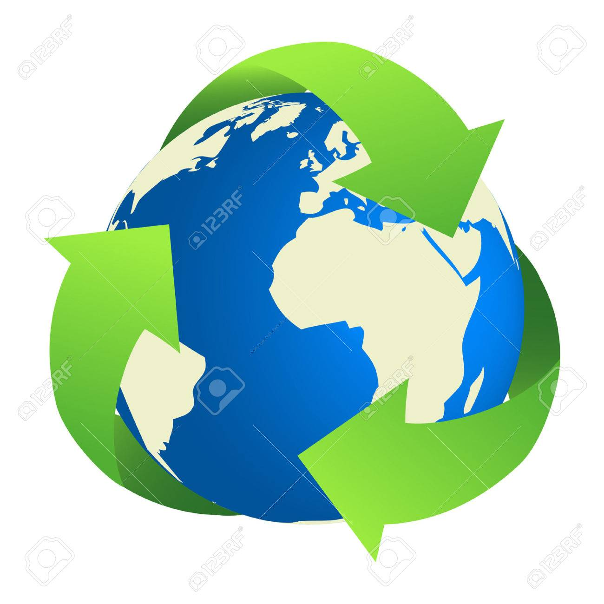

¿Por qué es importante?
Las 3R son las iniciales de tres palabras claves que representan un ciclo.Esas tres palabras son reducir, reutilizar y reciclar. El eslogan ecológico es: Reduce, Reutiliza y Recicla.

Quienes somos:
Nosotras somos Paloma Chaves y Delfina Bóscolo, dos alumnas del colegio Oakhill Pilar. Este año comenzamos con el proyecto "Digital House", y como proyecto final debemos crear un sitio web. Nuestro sitio concientiza sobre las 3R.
Problemas actuales
Estamos viviendo en un mundo donde la concientizacion sobre el reducir, reutilizar y reciclar, mejor conocido como las 3R, no es muy utlizado. Poca gente sabe que es eso y esa es una de las causas por las que hoy nos enfrentamos con el problema del calentamiento global.